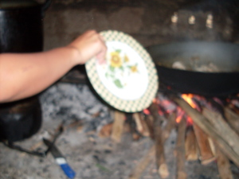

kiyab 
/kiab/
v_rt.
“fan”
n.
a hand fan
Eng. fan, a; hand fan
Tag. paypáy; pamaypáy
Ceb. paypáy
Ilo.: paypáy
OCM: General Tools (412)
DDP: Blow air (1.1.2.1)
Online dict status: -
Usage level: M
n.
(pangiyab, paN-) a hand fan
Eng. fan, a; hand fan
Online dict status: -
Usage level: R
v.
for someone (egkiyab, migkiyab/ingkiyab, kiyab, agent, eg><ø-) to fan something (e.g., a fire or a person ) (egkiyaban, ingkiyaban/migkiyaban/pigkiyaban, kiyabi, location, eg><an-) with something (e.g., a winnowing tray nihu) (igkiyab, ingkiyab, instrument, ig><ø-)
Wrd.Gloss: fan
Egkiyab a te hapuy eyew eglegleg.
I will fan the fire so that it will blaze.
Eng. fan, to
OCM: Fire (372)
DDP: Blow air (1.1.2.1)
Online dict status: -
Usage level: M
for someone (egkikiyab, migkikiyab/ingkikiyab, kikiyab, agent, eg><ø-rdpCV-) to fan something (e.g., a fire or a person ) (egkikiyaban, ingkikiyaban/migkikiyaban/pigkikiyaban, kikiyabi, location, eg><an-rdpCV-) with something (e.g., a winnowing tray nihu) (igkikiyab, ingkikiyab, instrument, ig><ø-paN-) many times
Wrd.Gloss: fan
Cult. This form is often used when talking about lime production (for betel nut).
Eng. fan, to
OCM: Fire (372)
DDP: Blow air (1.1.2.1)
Online dict status: -
Usage level: M
Updated by: RJH,RJH,TME,NJK,NJK.NJK,RAA,RAA
Last updated: 18/Feb/2014
This page last updated: 03-Jan-2020
Copyright © 2009-2014, Matigsalug Language Christian Association, Inc